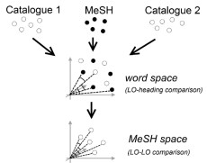
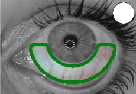
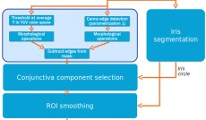

Medical Informatics Publications (2013–14)
Quantitative Conjunctival Provocation Test for Controlled Clinical Trials
István Sárándi
, Dan Philipp Claßen, Anatoli Astvatsatourov, Oliver Pfaar, Ludger Klimek, Ralph Mösges, Thomas M. Deserno
Methods of Information in Medicine, 2014;
53
(4):238-44
Paper

Zuordnung von Nationalem Kompetenzbasiertem Lernzielkatalog und fakultätsspezifischen Lernzielkatalogen durch automatische Textverarbeitung
Cord Spreckelsen, Roland Döpke,
István Sárándi
Conference of the German Association for Medical Education (GMA), 2014.
Meeting abstract
Towards Quantitative Assessment of Calciphylaxis
Thomas M. Deserno,
István Sárándi
, Abin Jose, Daniel Haak, Stephan Jonas, Paula Specht, Vincent Brandenburg
SPIE Medical Imaging 2014: Computer-Aided Diagnosis (Vol. 9035, p. 90353C), 2014.
Paper

Automatic Conjunctival Provocation Test Combining Hough Circle Transform and Self-Calibrated Color Measurements
Suman Raj Bista,
István Sárándi
, Serkan Dogan, Anatoli Astvatsatourov, Ralph Mösges, Thomas M. Deserno
SPIE Medical Imaging 2013: Computer-Aided Diagnosis (Vol. 8670, p. 86702J), 2013.
Paper

Quantitative Conjunctival Provocation Test
István Sárándi
, Thomas Deserno, Dan Classen, Oliver Pfaar, Anatoli Astvatsatourov, Ralph Mösges
Conference of the German Association for Medical Informatics, Biometry and Epidemiology (GMDS), 2013. (Lübeck, Germany)
Meeting abstract
Slides